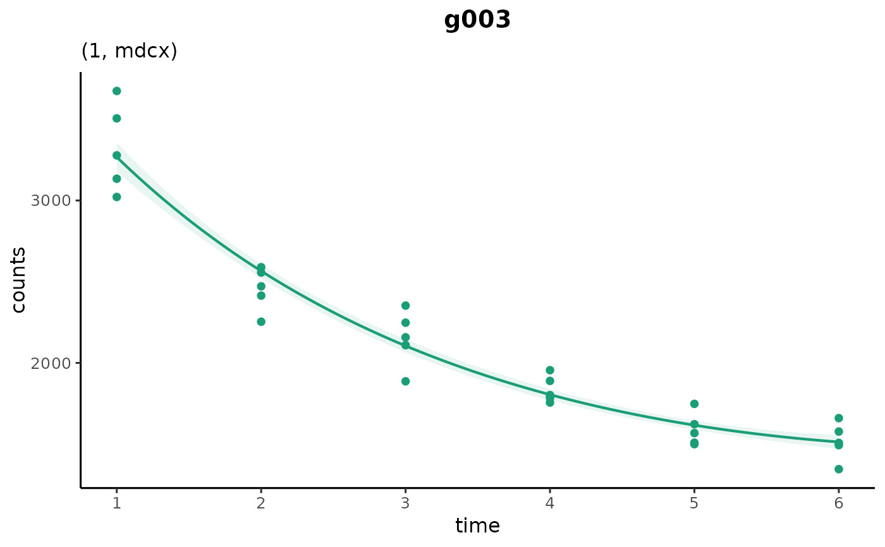
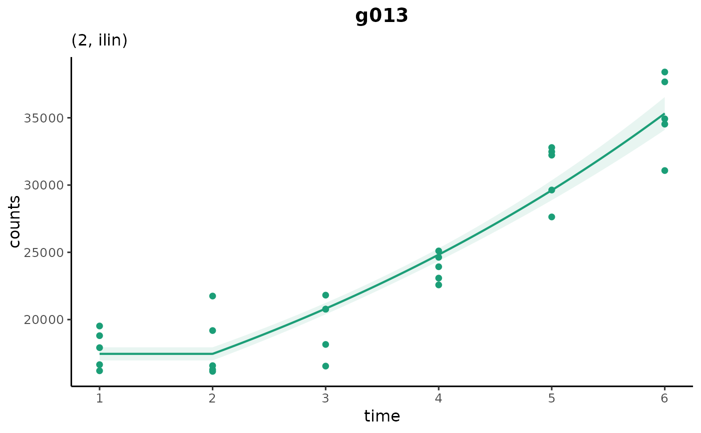

Plot fitted changepoint additive models
Usage
plot_cpam(
cpo,
gene_id = NULL,
target_id = NULL,
cp_type = c("cp_1se", "cp_min"),
shape_type = "shape1",
bs = "auto",
cp_fix = -1,
facet = FALSE,
sp = NULL,
show_fit = TRUE,
show_data = TRUE,
show_fit_ci = TRUE,
show_data_ci = TRUE,
ci_prob = "se",
remove_null = FALSE,
null_threshold = 0.05,
null_threshold_adj = TRUE,
k_mult = 1.2,
return_fits_only = FALSE,
family = "nb",
common_y_scale = TRUE,
scaled = FALSE,
base_size = 12
)Arguments
- cpo
A cpam object containing count data, model fits, and optional changepoint/shape estimates
- gene_id
character; gene_id (mutually exclusive with target_id)
- target_id
character; target_id (mutually exclusive with gene_id)
- cp_type
One of "cp_1se" or "cp_min"; rule for selecting changepoint from fitted models. See
estimate_changepoint()for details.- shape_type
One of "shape1" or "shape2"; which set of fitted shape patterns to use. See
select_shape()for details.- bs
Shape pattern to fit ("null", "lin", "ilin", "dlin", or from cpo$bss). Use "auto" (default) to use estimated shapes as per
shape_type.- cp_fix
Numeric; fixed changepoint time. Set to -1 (default) to use estimated changepoints
- facet
Logical; for multiple transcripts, plot in separate facets?
- sp
numerical; set the smooth parameter. NULL (default) for automatic selection
- show_fit
logical; show the fitted trend?
- show_data
logical; show (possibly normalized and scaled) data points?
- show_fit_ci
logical; show credible interval for the fitted trend?
- show_data_ci
logical; show bootstrapped quantile for data points?
- ci_prob
"se" for standard error bands (see
mgcv::predict.gam()), or numeric for simulation-based intervals. If numerical, sets the probability for the simulation-based estimates of credible interval.- remove_null
logical; only plot differentially expressed transcripts (not applicable for gene-only analyses)
- null_threshold
numeric; P value threshold for filtering out NULL transcripts
- null_threshold_adj
logical; use adjusted (default) or non-adjusted p-values for filtering targets
- k_mult
numerical; multiplier for the number of knots in the spline. Not recommended to change this value.
- return_fits_only
logical; return the model fits. Does not plot the function
- family
character; negative binomial ("nb", default) or Gaussian ("gaussian")
- common_y_scale
logical; for faceted plots of multiple transcripts, should the scale of the y-axis be common or free.
- scaled
logical; scaled data by overdispersions (for bootstrapped data only)
- base_size
numeric; base font size for the plot
Details
Plots the fitted trend and data points for a given gene or target. If a gene ID
is supplied, the function will plot all transcripts for that gene.
The function can also be used to return the model fit(s) only, which are
gamObject objects from the mgcv package.
Examples
library(cpam)
# load gene-only example cpam object
load(system.file("extdata", "cpo_example.rda", package = "cpam"))
# example gene
plot_cpam(cpo_example, gene_id = "g003")

# gene with estimated changepoint at timepoint 3
plot_cpam(cpo_example, gene_id = "g013")
# manually set the changepoint
plot_cpam(cpo_example, gene_id = "g013", cp_fix = 2)
